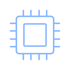

01 / HARDWAREThe processor
CPU
Runs program instructions and handles general computing tasks. Think of it as the part that carries out the work your software asks for.
Before you buy
Check the motherboard socket, chipset support, and required BIOS version.